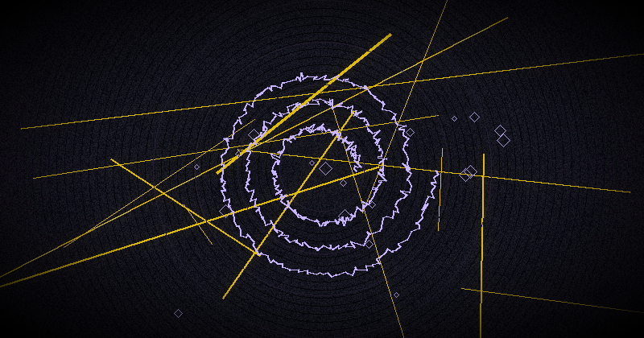

How to Charge a Sigil Correctly: 7 Proven Methods
You have designed a perfect sigil. You removed the vowels, combined the consonants, and produced a symbol that encodes your deepest intention. It sits before you — elegant, precise, and completely inert.
A sigil is just a drawing until you charge it. The charging is where the magic happens. Without it, you have calligraphy, not sorcery.
In chaos magick, the term for charging is gnosis — an altered state of consciousness in which the critical faculty of the mind is temporarily suspended. In that window, the sigil bypasses your rational defenses and implants itself directly into the subconscious, where it manifests as your reality.
This guide covers seven proven methods to charge a sigil correctly, drawn from the chaos magick tradition (Spare, Carroll, Hine) and modern innovations. Each method includes how to perform it, time required, difficulty level, and the best use case.
1. Orgasmic Gnosis / Gnostic Exhaustion (Spare's Method)
Austin Osman Spare, the father of sigil magic, discovered that the moment of orgasm creates a brief window where the conscious mind goes silent. In that fraction of a second, the subconscious is wide open. Spare taught that the sigil should be visualized or stared at in the final moments before climax, then released at the peak.
This is the original and most powerful sigil charging method in chaos magick. The intensity of the orgasmic state delivers the sigil with maximum force.
- How to do it: Place the sigil where you can see it. Arouse yourself to the edge of climax. Gaze at the sigil. At the moment of orgasm, release both the physical tension and the sigil simultaneously. Do not think about your intention — let the symbol carry it.
- Time required: 10-30 seconds (the moment of climax)
- Difficulty: Beginner — natural and intuitive
- Best for: Urgent, high-intensity intentions; practitioners who want maximum force
- Note: Solo practice works well; partnered practice can amplify the energy but requires coordination. Spare originally used masturbatory gnosis as his core method.
2. Breathwork Gnosis (Hyperventilation)
Breathwork is one of the most accessible ways to alter consciousness. Rapid, rhythmic breathing (similar to holotropic breathwork) induces a lightheaded, trance-like state that suppresses the critical faculty. The technique is portable, silent, and requires no equipment.
The sigil is held in the mind or stared at while the breathwork peaks. When the altered state is strongest, the sigil is released.
- How to do it: Sit or lie down. Place the sigil before you. Take rapid, deep breaths — in and out through the mouth — at a rate of about one breath per second. Continue for 60-90 seconds until you feel tingling, lightheadedness, or altered perception. Gaze at the sigil. Hold the breath for a few seconds, then exhale slowly and release the sigil.
- Time required: 2-5 minutes
- Difficulty: Beginner — easy to learn, but may feel intense at first
- Best for: Quick daily charging; practitioners with limited privacy or time
- Note: Do not practice hyperventilation if you have epilepsy, high blood pressure, or respiratory conditions. Use a gentler breath pattern (e.g., 4-7-8 breathing) if needed.
3. Meditation / Void State
The void state is a deep meditative condition in which the mind is empty of all thought. There are no images, no internal monologue, no sensations — just pure awareness. Into this void, the sigil is introduced, held for a moment, and then allowed to dissolve.
This method is favored by ceremonial magicians and those with an established meditation practice. It is gentler than orgasmic or breathwork gnosis but requires discipline.
- How to do it: Sit in a comfortable position. Close your eyes. Focus on your breath. When thoughts arise, let them pass without engagement. After 10-15 minutes, you may reach a still point. At that moment, visualize the sigil in your mind's eye. Hold it for 3-5 seconds, then let it fade. Open your eyes. Do not revisit the sigil.
- Time required: 15-30 minutes
- Difficulty: Intermediate — requires meditation experience
- Best for: Long-term, complex intentions; practitioners with a meditation practice
- Note: The void state is not "thinking about nothing" — it is a cessation of the thinking process itself. Do not force it. Let silence arise naturally.
4. Dancing / Trance (Whirling, Drumming)
Rhythmic movement is one of humanity's oldest methods of altering consciousness. Sufi whirling, shamanic drumming, and ecstatic dance all induce trance states through repetitive physical motion. The body tires, the mind quiets, and the sigil can be planted.
This method combines physical exhaustion with rhythmic entrainment — both powerful gnostic triggers.
- How to do it: Choose repetitive movement: spinning, bouncing, swaying, or dancing to a steady drumbeat (120-150 BPM works well). Alternatively, use a drum or rattle at a steady rhythm. Gaze at the sigil or hold it in mind. Continue until you feel dissociated, dizzy, or deeply entranced. At that peak, stop and release the sigil with a final exhalation.
- Time required: 10-30 minutes
- Difficulty: Intermediate — physically demanding
- Best for: Physical practitioners; outdoor rituals; group workings
- Note: You can use recorded drumming tracks or shamanic journey music. The goal is to lose yourself in the movement.
5. Sensory Overload (Strobe Lights, Loud Music)
If you overwhelm the conscious mind with input, it temporarily shuts down. This is the principle behind sensory overload gnosis. Intense strobe lights, deafening music, or both simultaneously flood the nervous system and create a trance window.
This method is modern, intense, and requires some equipment. It is particularly effective for practitioners who have difficulty quieting their mind through meditation.
- How to do it: Set up a strobe light (or a phone app with strobe function) in a dark room. Play loud, rhythmic music. Place the sigil in front of you. Gaze at it as the strobe flashes. The flickering will disrupt normal vision and cognition. When you feel disoriented and non-verbal, release the sigil and turn everything off.
- Time required: 5-15 minutes
- Difficulty: Advanced — can be physically uncomfortable; epilepsy warning
- Best for: Practitioners who need a strong gnostic break; tech-friendly rituals
- Note: WARNING: Strobe lights can trigger seizures in people with photosensitive epilepsy. Do not use this method if you or anyone in your household has epilepsy.
6. Sensory Deprivation (Float Tank, Dark Room)
The opposite of overload: remove all sensory input. In the absence of sight, sound, touch, and temperature variation, the brain hallucinates. This hypnagogic state is fertile ground for sigil charging.
Float tanks (isolation tanks) are ideal but expensive. A completely dark, silent room with earplugs works nearly as well.
- How to do it: Enter a pitch-dark, silent environment. Lie down and close your eyes. After 10-20 minutes, the brain will begin producing spontaneous imagery and sensations (hypnagogia). When you notice this state, introduce the sigil mentally. Hold it briefly, then let it go. Drift. Do not try to control the experience.
- Time required: 20-60 minutes
- Difficulty: Advanced — patience and comfort with silence required
- Best for: Deep subconscious work; connecting with the source of the sigil
- Note: If using a float tank, memorize the sigil beforehand. Do not bring physical objects into the tank. The intense quiet can be unsettling at first — this fades with practice.
7. Digital Flash Ritual (Chaos Sigil Generator App)
Modern chaos magick meets technology. The Chaos Sigil Generator app includes an integrated flash ritual: after you generate your sigil, a brief, intense visual flash serves as a gnostic trigger. The practitioner gazes at the sigil on screen, the flash occurs without warning, and the sigil is fired into the subconscious in a single coordinated moment.
This method solves the perennial problem of achieving gnosis in everyday environments. No partner, no equipment, no noise — just your phone and your intention.
- How to do it: Open the Chaos Sigil Generator app. Enter your intention and generate your sigil. Select the "Flash Charge" mode. Gaze at the sigil on the screen. The app will trigger a bright visual flash at a random interval. When the flash comes, release the sigil. The app handles the timing, so you do not need to coordinate breath, movement, or climax.
- Time required: 10-60 seconds
- Difficulty: Beginner — the app does the work
- Best for: Everyday sigil charging; practitioners who want a reliable, repeatable method; digital natives
- Note: The flash is designed to be startling but harmless. You can adjust the brightness and flash duration in the app settings.
Charge sigils instantly with the Digital Flash Ritual.
The Chaos Sigil Generator app combines cryptographic sigil creation with an integrated gnostic flash trigger. Generate, charge, and release — all in one tool.
Get the Chaos Sigil Generator →Sigil Charging Methods Comparison Table
Use this table to choose the right method for your current situation, available time, and experience level.
| Method | Time | Difficulty | Best For | Key Tool |
|---|---|---|---|---|
| 1. Orgasmic Gnosis | 10-30 sec | Beginner | Urgent, high-intensity intentions | Your body |
| 2. Breathwork | 2-5 min | Beginner | Quick daily charging | Your lungs |
| 3. Meditation / Void | 15-30 min | Intermediate | Long-term complex intentions | Your mind |
| 4. Dancing / Trance | 10-30 min | Intermediate | Group rituals, physical work | Music / drum |
| 5. Sensory Overload | 5-15 min | Advanced | Needing a strong gnostic break | Strobe, speakers |
| 6. Sensory Deprivation | 20-60 min | Advanced | Deep subconscious work | Dark / float tank |
| 7. Digital Flash | 10-60 sec | Beginner | Everyday sigil charging | Smartphone |
Common Charging Mistakes
Even experienced practitioners make these errors. Avoid them to maximize your sigil success rate.
- Not reaching true gnosis. Thinking about the sigil intellectually while charging defeats the purpose. You must enter an altered state, not merely a relaxed one. The critical faculty must be bypassed, not just quieted.
- Checking for results. Obsessively looking for manifestations blocks them. The sigil works in the subconscious — checking it is like digging up a seed to see if it has sprouted.
- Charging too many sigils at once. Each sigil requires a fresh gnostic state. Firing multiple sigils in one session dilutes the energy. Focus on one intention per ritual.
- Using weak intention. If you do not genuinely desire the outcome, the sigil will be limp. Charging requires emotional energy. A half-hearted intention produces half-hearted results.
- Forcing a method that does not suit you. If meditation frustrates you, use dance. If sensory overload frightens you, use breathwork. There is no "correct" method — only the method that works for you.
- Neglecting the release. Charging is only half the process. The sigil must be released — truly forgotten or ritually dismissed. Holding onto it keeps it tethered to the conscious mind.
What to Do AFTER Charging: Forgetting and Releasing
The post-charging phase is as important as the charging itself. Here is what to do:
- Forget immediately. The moment the sigil is fired, do not think about it. Distract yourself — watch a movie, go for a walk, call a friend. The sigil must sink into the subconscious without conscious interference.
- Do not analyze. Do not wonder "did it work?" or "did I charge it correctly?" Doubt undermines the working. Trust the process.
- Destroy or store the sigil. Traditional practice says to burn, bury, or destroy the sigil after charging. Alternatively, you can store it in a sealed envelope or a "sigil nursery" box. The key is to remove it from your daily awareness.
- Go about your life. The sigil works best when you are not thinking about it. Return to normal activities. If synchronicities or dreams appear, note them but do not dwell.
- Set a mental trigger. Some practitioners pair the release with a physical action — clapping, snapping fingers, exhaling sharply. This creates a kinetic anchor that signals to the subconscious: "the working is complete."
- Do not recharge. If the sigil has not manifested after a reasonable time (weeks to months), do not recharge the same sigil. Create a new one with refined wording. Recharging a known sigil keeps you attached to the outcome, which blocks manifestation.
How to Know If It Worked: Signs and Synchronicities
Sigil manifestation is rarely a dramatic lightning bolt. It is subtle, organic, and often unrecognized until you look back. Common signs include:
- Synchronicities. Meaningful coincidences related to your intention appear in daily life. You think of the sigil's goal, and someone mentions it. You see symbols that echo the sigil's purpose.
- Dreams. The sigil or its intention appears in your dreams. This indicates the subconscious has accepted the working.
- Unusual emotions. A sudden sense of peace, confidence, or knowing about the intention. The anxiety of "will it happen?" is replaced by calm certainty.
- Opportunities appear. People, resources, or circumstances align with your intention. These may seem ordinary but are statistically improbable.
- No immediate sign. Often, the sigil works silently. You may only realize it manifested months later when you look back and see the outcome. This is normal. Trust the silence.
Important: If you are actively looking for signs, you have not released the sigil. The goal is to not care. When you genuinely forget, that is when the magic happens.
Frequently Asked Questions
What does it mean to charge a sigil?
Charging means directing a state of gnosis (altered consciousness) into the sigil to activate it magically. Until charged, a sigil remains a purely symbolic drawing with no magical potency. The charging process implants the sigil's intention into the practitioner's subconscious, where it works toward manifestation.
Can I charge a sigil without gnosis?
No. Gnosis is the engine of sigil magic. Without an altered state, you are merely looking at a drawing. Even mild trance states (absorption in a film, driving hypnosis, daydreaming) count as gnosis — but the deeper the state, the more effective the charge.
What is the fastest way to charge a sigil?
The digital flash ritual (Method 7) takes 10-60 seconds and requires no setup. Orgasmic gnosis (Method 1) is similarly fast but requires privacy. For the fastest reliable result, use the Chaos Sigil Generator app's flash charge mode.
How many sigils can I charge in one session?
One. Each sigil requires a complete gnostic cycle. Attempting to charge multiple sigils in one session divides the energy and weakens each working. If you must charge multiple, do them on separate days.
Should I destroy the sigil after charging?
Traditional chaos magick says yes — burning, burying, or tearing the sigil reinforces the release. However, many modern practitioners store sigils in a box or digital folder. The important thing is to remove it from daily view. Do not keep it on your altar or phone wallpaper.
What if I accidentally think about the sigil after charging?
It happens. A stray thought will not undo the working. Simply redirect your attention. The problem is not casual thought but deliberate, anxious obsession. If you catch yourself worrying, say mentally: "It is done" and move on.
References
- Spare, A.O. (1913). The Book of Pleasure (Self-Love): The Psychology of Ecstasy. London.
- Carroll, P.J. (1987). Liber Null & Psychonaut. York Beach, ME: Samuel Weiser.
- Hine, P. (2002). Condensed Chaos: An Introduction to Chaos Magic. Tempe, AZ: New Falcon Publications.
- Sherwin, R. (2015). "The physics of chaos magick: Entropy, information and sigilization." Chaos International, 25, 4-18.
- Whitehead, T. (2018). "Neurognosis: The neurology of altered states in magical practice." Rune Soup.
- Urban, H. (2006). Magia Sexualis: Sex, Magic, and Liberation in Modern Western Esotericism. Berkeley, CA: University of California Press.